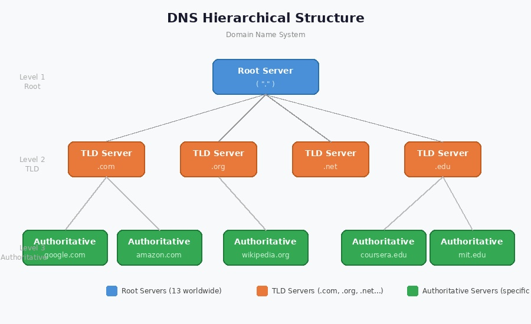
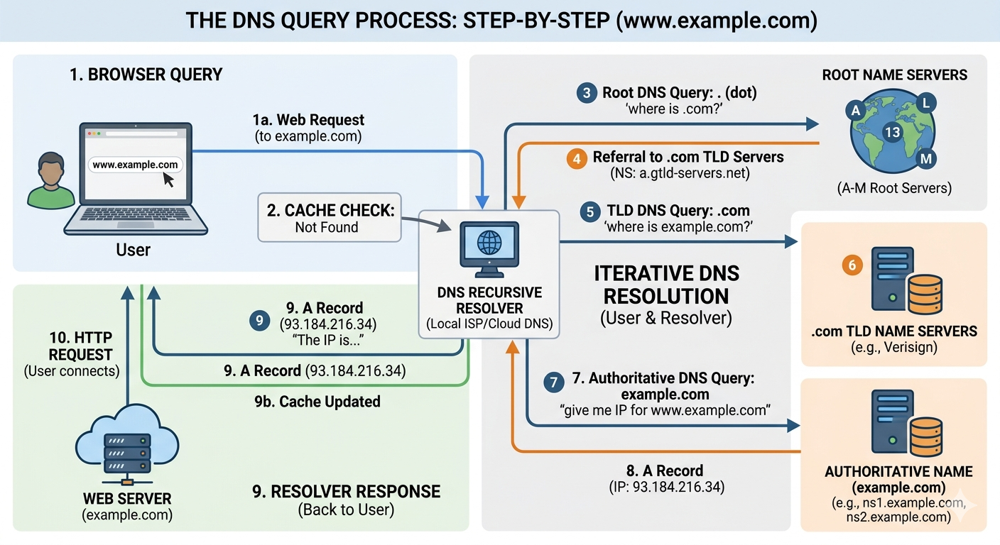

DNS stands for Domain Name System. It is a hierarchical and decentralized naming system for computers, services, or other resources connected to the Internet or a private network.
DNS essentially acts as the phone book of the internet, translating domain names (like www.example.com) into IP addresses that computers can understand. This allows users to access websites using easy-to-remember names instead of numerical IP addresses.

DNS Hierarchy Structure

DNS Query Resolution Process
How DNS works: